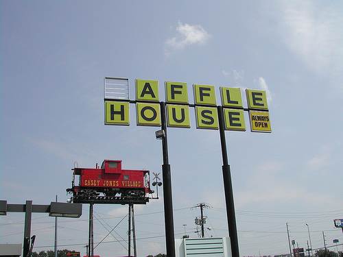

When I was in college, I thought I was a real writer. I had taken a screen writing class and I was deeply inspired. I had all sorts of glorified images in my head of what it was like to be a screen writer. I thought they all smoked cigarettes while drinking coffee huddled over a computer in a crappy diner all night long and for some reason I loved this. I have always and will always hate cigarettes, but everything else seemed great. I would fantasize about writing an oscar winning screen play. I would imagine myself as a mad artist, all disheveled and dirty, scribbling ideas on a wall that would change the world. Because of this I would spend several nights in a Waffle House writing. This was nothing like I imagined. Waffle houses are gross. Everyone smoked around me and it was completely unnecessary to write all night because I had plenty of free time during the day. I was just a kid trying to be cool.
{kind=link}

I believe it’s spelled “Awful House.”
During this time, I got an offer for a show runner of a popular sitcom to critique a short film I’d written. I gladly jumped at the chance. I went to a film festival where he taught a class on screen writing and at the end he critiqued my script and two others. During his critique he complimented one thing about my story. He said that it was clear what my character’s goal was right from the beginning. After that he literally had about 400 negative critiques for about 10 pages of writing. *Insert weeping and gnashing of teeth here*
For the next year, I was terrified to write anything. Whenever you create something, it becomes your baby. Your creation is an extension of yourself. If someone insults your baby, they’re insulting you. Have you ever insulted someone’s baby? It doesn’t go well.

Even he thinks your baby is ugly.
Later on, I started writing again, but I never wanted anyone’s help. For a while it was fine. Then suddenly I realized that everything I wrote was super crappy. Mostly because everything sounds good in your head. When you say it out loud, however, you realize that you just wrote a story about two cows running a fortune 500 company.
That’s when I realized that I needed help. I needed someone who I could trust to read what I wrote. That led me to meeting three types of people:
- The Pessimist
Whenever, you meet a person who says, “Not a pessimist, I’m just a sceptic,” that person is wrong. He/She a pessimist. He/She is lying to you because no one wants to admit that they’re just mean. This person thinks everything is dumb. Every one is doing everything wrong in their mind. They critique and commentate on everything that everyone is doing, but they don’t actually do any kind of creating themselves. This person can not help you. They never say anything positive and they’ll make you want to stop doing anything because you’ll start to believe that they’re right.
- The “Yes Man”
This is the worst kind of friend you can have. This is the friend that is either trying to impress you or has no self esteem. Why are they the worst? Because they’ll let you think that everything you do is GOLD. They’ll get you excited about the worst things you create and that is neither constructive or helpful. They don’t make you better, they make your mistakes more obvious. Instead of you producing something awful that you think is good and showing it to a few friends, you produce something awful and you show it to the world because your friend has let you to believe that it’s incredible.
- The Confident
I’m fortunate. I have a wife that I love. Not only is she beautiful, but she’s smart, professional, talented, creative, and funny. Not to mention, she a COPY WRITER. She’s incredible at everything she does. When she reads something, she’s great at finding ways to improve it and make it look more professional. The best and worst thing about my wife is that she’s honest. She critiques everything I create. When it’s good, she sings my praises to the moon. She tells her friends and family and helps make whatever I’m doing even better. However, if it’s not good, she’ll be the first to tell me.
Her – “This sketch isn’t funny.”
Me – “What? It’s hilarious. Don’t you get the joke? It’s about sea captains and-”
Her – “Oh, I get the joke. The joke is kind of racist against pirates and I don’t think you know what ‘booty’ means.”
I need that in my life and so do you. You need someone who can tell the difference between something amazing and something that’s just garbage. You need someone who will tell you honestly what could help it become better and what you should remove because it just doesn’t work. If this person is only telling you that your material isn’t good, and not helping you add things to make it better, than you’re working with a pessimist, but… If you find that one person that will be honest with you and bring creativity to the table as well…
You’re in business to create something that you’ll be proud of.